Ingredients
Partnering with board certified vet nutritionists and expert formulators, we selected the best natural ingredients to develop a complete and balanced range of food for dogs at all life stages.
As healthy as fresh cooked dog food.
- Packed with superfoods, pre & probiotics, vitamins, and minerals.
- Made with real animal protein first, with no animal by-products or fillers
- Made without corn, wheat, artificial flavors, artificial colors, or fillers
- Made to taste delicious and satisfy even the pickiest dogs at every meal
What’s inside
Learn moreReal Chicken
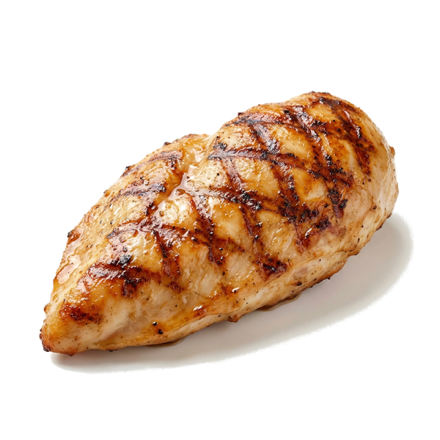
- Good source of energy
- Builds muscle mass
- Loaded with amino acids
Barley
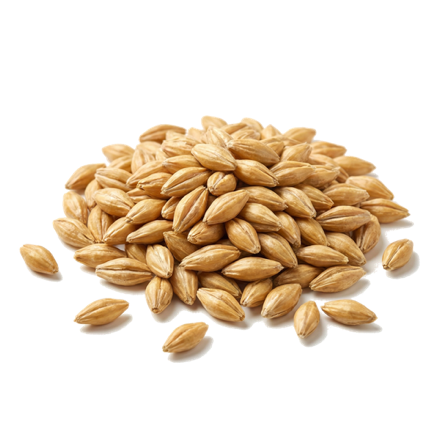
- Supports healthy digestion
- Promotes heart health
Real Salmon
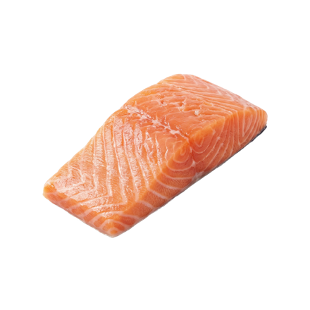
- Highly digestible protein
- Rich in Omega-3s and B vitamins
- Helps maintain muscle mass
Brown Rice
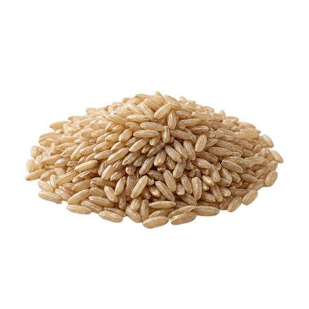
- Source of fiber and B vitamins
- Supports healthy digestion and sustained energy
Beet Pulp
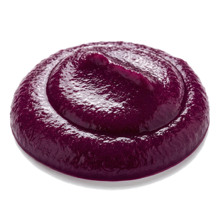
- High quality source of fiber
- Maintains intestinal health
- Enhances ingredient absorption
Sweet Potato
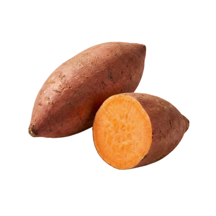
- Highly digestible and tasty source of fiber
- Contains essential vitamins and antioxidants
Carrots
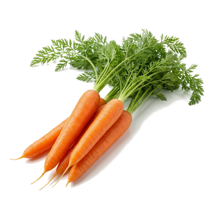
- Rich in beta-carotene and vitamin A
- Helps maintain a healthy immune system
- Supports eyes, skin and coat health
Kale
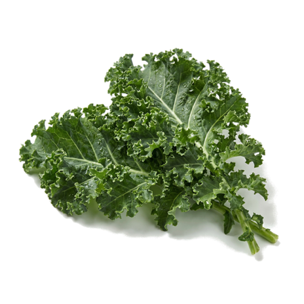
- Rich in calcium, magnesium, potassium and iron
- Helps maintain bone and heart health
Apples
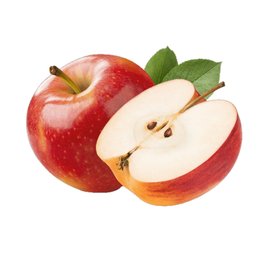
- Source of vitamin C, fiber and antioxidants
- Helps maintain overall health
Cranberries
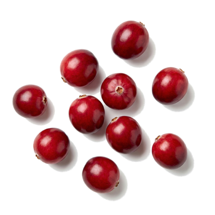
- Antioxidant rich
- Provides essential vitamins and minerals
- Helps maintain a healthy immune system
Pre & Probiotics
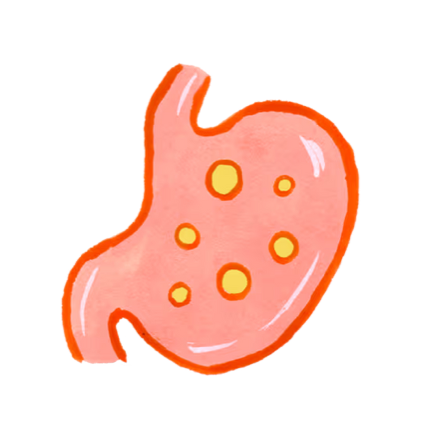
- Promotes a healthy gut biome
- Supports digestion and overall vitality
Rosemary Extract
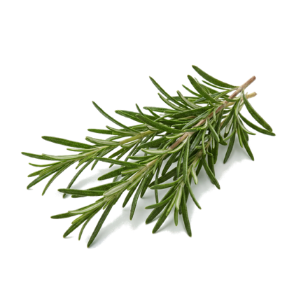
- Rich in antioxidants
- Antimicrobial
- Helps maintain a healthy digestive tract and immune system
How it’s made
Every ingredient is checked before it reaches a recipe.
Our manufacturing partner monitors what arrives, against specification, every delivery. Nothing gets waved through because it usually turns out fine.
Recipes are built around what those ingredients bring with them.
Complete and balanced isn’t only about hitting nutritional targets. It’s about knowing what each ingredient contributes and formulating accordingly.
And every run is measured.
Our process and our finished food are checked against defined pet food specifications, every batch.
Results That Matter
What’s the best food for your dog? Glad you asked. Tell us a little bit about your dog and receive a personalized recommendation.
Take Quiz